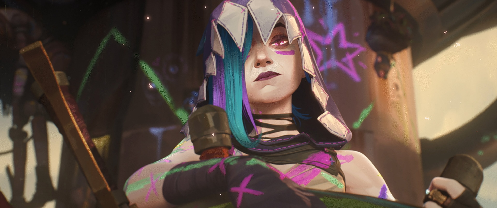
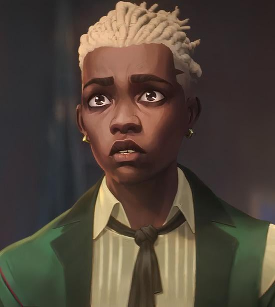
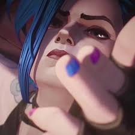
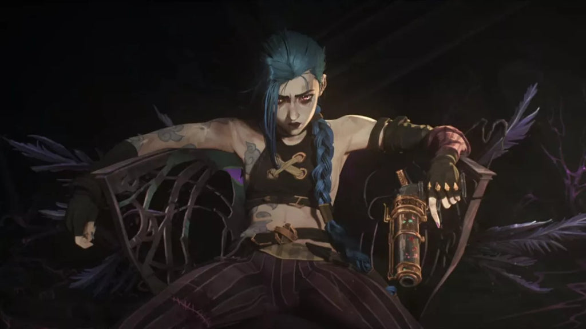
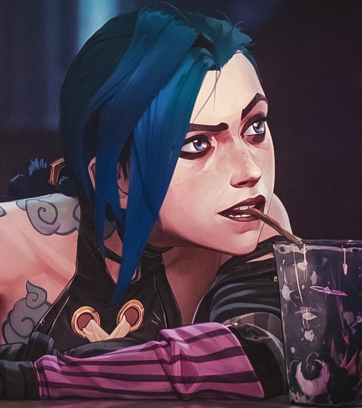

"I'm wearing the smile you gave me."

They think I'm a mess. A broken toy left in the rain. Powder was a scared little girl who hid in the shadows, waiting for someone to save her. Jinx doesn't wait. Jinx brings the fire. Can you feel the heat yet? Every time I blink, I see the lights of Piltover screaming to be put out. It's like a song that never stops, a high-pitched ringing in my ears that only quietens when something goes BOOM.

Ekko thinks he’s so smart with his little clocks and his winding gears. We used to be friends, back when the world was just a playground of scrap metal. Now he looks at me with those sad, judgmental eyes. He wants to rewind time? Fine! Let him try. He’s stuck in a loop of trying to save everyone, while I’m moving forward into the beautiful chaos. You’re too slow, Little Man!

The Shimmer is a funny thing. It makes everything go fast and bright. It feels like lightning running through my blood, turning my eyes into glowing embers. It saved my life, they say. But it also took the rest of what was left of Powder. Now, when I move, the world blurs into streaks of violet and neon. I feel stronger, faster, and much more... unstable. My heart beats like a drum made of scrap metal.

I made a seat for myself. Right at the top of the junk heap. From here, I can see everything. I see the Enforcers crawling like ants, and I see the sparkling towers of the Council. They think they're safe. They think they're better than us. But a throne is just a chair until you decide to sit in it. And I'm not just sitting—I'm waiting for the right moment to burn it all down.

Did I say I was going to blow everything up? I mean, probably. But look at this face! Does this look like the face of a cold-blooded criminal? Okay, don't answer that. Sometimes you just have to laugh at the voices. If you don't laugh, they win. And Jinx doesn't like losing. Let's have a tea party instead! I'll bring the cupcakes, you bring the... well, just try not to explode before the third course.